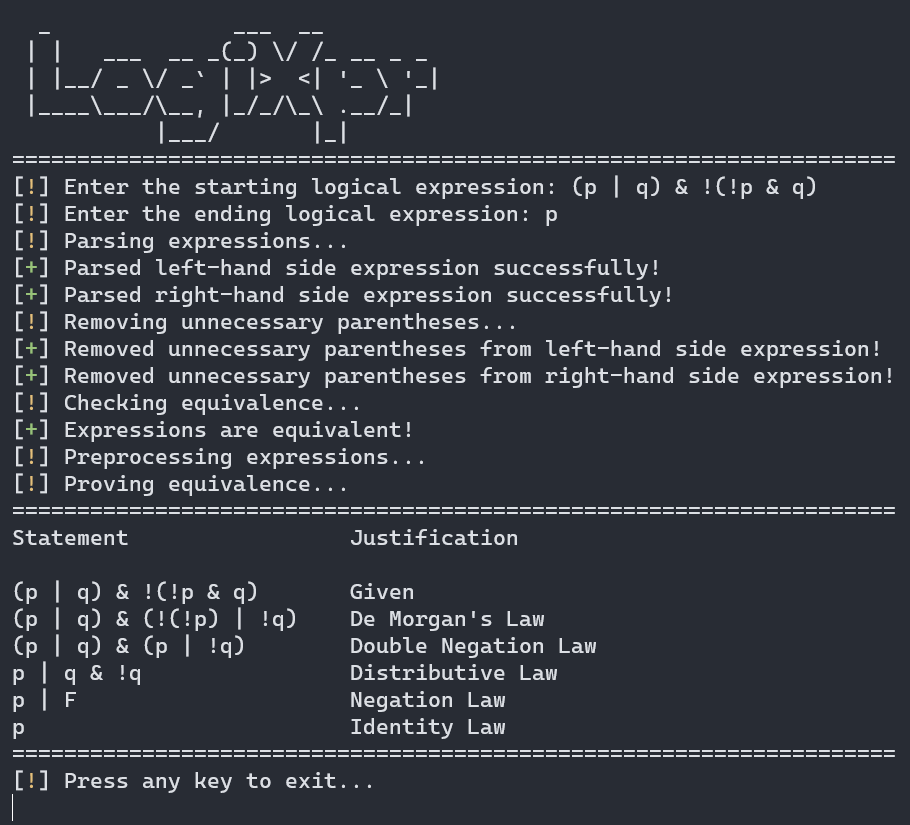
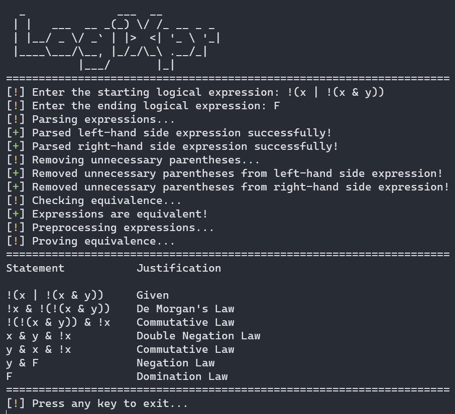

LogiXpr is a C++ console application that evaluates boolean expressions. It supports the following operators:
!- not&- and|- or^- xor->- implies<=>- if and only if
It also supports the following constants:
T- trueF- false
And variables from a to z.
How it works
LogiXpr utilizes the shunting yard algorithm to convert expressions into abstract syntax trees (ASTs). These ASTs are subsequently evaluated to determine their equivalence using a truth table analysis. If an equivalence is detected, LogiXpr proceeds to recursively evaluate the initial AST by testing each node against the possible equivalences defined in the include\equivLaws.h file.
To find the shortest equivalent expression, LogiXpr employs a breadth-first search algorithm. This search algorithm systematically explores various transformations and evaluates the resulting expressions at each level. By leveraging the breadth-first search approach, LogiXpr efficiently identifies the shortest equivalent expression by considering all possible transformations at each step before delving deeper into the search space.
Preview
 
Installation
To build and install LogiXpr, you will need to have CMake installed on your system. You can download CMake from the official website: https://cmake.org/download/.
- Clone the repository git clone https://github.com/ericlin-jpg/LogiXpr.git
- Create a build directory cd LogiXprmkdir buildcd build
- Run CMake cmake ..
- Build the project cmake --build . --config Release
- Go to the
..\bin\Releasedirectory and run the executablecd ..\bin\Release./LogiXpr
Running Unit Tests
To run the unit tests in tests, run build.sh.